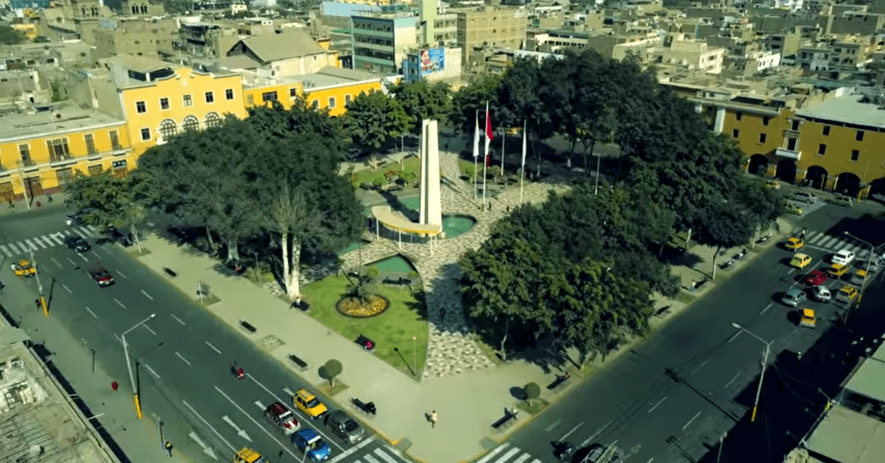

Los vestigios sugieren que hace aproximadamente 7.000 a.C., en Santo Domingo de Paracas, hubo asentamientos humanos de cazadores, recolectores, horticultores y pescadores (periodo arcaico temprano). Otro asentamiento, del período arcaico tardío, fue ubicado en Cabeza Larga, con restos óseos humanos del 3.000 a.C. Las civilizaciones Nazca y Paracas se desarrollaron en Ica. Los paracas practicaron la trepanación craneana a personas vivas, con cuchillos de obsidiana. Alcanzaron un extraordinario desarrollo en el área textil: emplearon cerca de 200 matices de colores y hasta 22 tintes en una sola prenda. Por su parte, los nascas destacaron por sus conocimientos de ingeniería hidráulica, construyendo acueductos y canales subterráneos reforzados con paredes interiores de piedra y techos de huarango. Además, sobresalieron por sus extraordinarios cerámicos polícromos. Posterior a las dos anteriores y en la zona norte de la región floreció la cultura Chincha; se caracterizó esta cultura por ser grandes navegantes y comerciantes; parece ser que mantuvieron "excelentes relaciones" con los Incas, luego de su conquista en tiempos del Sapa Inca Pachacútec.

La agricultura es su principal actividad, en especial el algodón, menestras (garbanzos, pallares y frijol) y vid, base de la industria vitivinícola de la zona, de donde es oriundo el pisco del Perú, aguardiente de uva peruano. Actualmente se viene desarrollando el cultivo de espárragos y pecanas para exportación. El aporte generado por los cultivos de espárrago en Ica han llevado al Perú a convertirse en el primer exportador mundial de este producto (FAOSTAT, 2006). Marcona (Nazca), es la única mina de hierro del país y sus yacimientos son los más importantes de la costa del Pacífico. Existe una buena siderúrgica en la provincia de Pisco. En Paracas, funcionan ocho fábricas de harina de pescado.
El desarrollo del departamento de Ica se basa en cuatro sectores: la agricultura, la minería, la pesquería y el turismo, sectores de vital importancia que generan divisas en la región y al país que el gobierno regional potencia a través de la Agencia de Fomento de la Inversión Privada.
El sector minero se encuentra representado por el hierro de Marcona. En el año 2004, la producción de hierro ha sido de 4.247.174 toneladas.s
El territorio Iqueño posee grandes yacimientos de oro, plata, cobre, sulfato de cobre, cobalto, entre otros minerales, que no pueden ser explotados por falta de inversión. Estas reservas minerales son explotadas de manera informal, principalmente en las provincias de Nasca y Palpa y en los últimos cinco años han ocasionado un incremento de la población en las mismas debido a la migración desde departamentos cercanos. Este auge de la minería informal también han incrementado la frecuencia de problemas medioambientales en las mencionadas provincias.
El departamento de Ica, en la actualidad, gracias al gas de Camisea, es una zona con un alto nivel energético y además en el litoral de Pisco y Chincha, se están haciendo exploraciones sísmicas, para determinar con mayor exactitud la presencia de trampas en el subsuelo donde se encuentra petróleo.
El Departamento de Ica cuenta con 6 puertos artesanales en: Tambo de Mora en la provincia de Chincha, San Andrés, El Chaco, Lagunilla y Laguna Grande, en la (provincia de Pisco), San Juan de Marcona en la provincia de Nazca, y 2 puertos industriales: puerto General José de San Martín en la provincia de Pisco y puerto de San Nicolás en Marcona, ubicados estratégicamente, teniendo una gran expectativa de desarrollo.
Corporación Financiera de Desarrollo (COFIDE)], vienen desarrollando productos financieron estandarizados (PFE), que vienen siendo exportados en cantidad a diversos países de América, Asia, África, Europa y Oceanía. Entre estos productos, destacan:
En el año 2008 exportó alrededor de 3.782 mil millones de dólares consolidando su gran potencia exportadora en el país.
Se han incorporado al volumen de exportaciones más áreas sembradas con espárrago (200 ha en la provincia de Ica), palta hass (70 ha en la provincia de Ica), uvas pisqueras (150 ha en la provincia de Ica), uvas de mesa (400 ha en la provincia de Ica), palta hass (240 ha en la provincia de Chincha) y espárrago (200 ha en la provincia de Chincha).
Finalmente, el TLC con los Estados Unidos de América, abrirá nuevos mercados a los productos que ya se vienen exportando e incorporará nuevos productos, lo que motivará un nuevo impulso al desarrollo de esta próspera región del Perú. Asimismo, la carretera transoceánica proyectada conjuntamente entre Perú y Brasil, desarrollará los grandes puertos iqueños: General José de San Martín en la provincia de Pisco y San Nicolás en el distrito de Marcona en la provincia de Nazca, además de desarrollar y generar puestos de trabajo en ambas provincias y a lo largo del desarrollo de la carretera desde la frontera con Brasil.